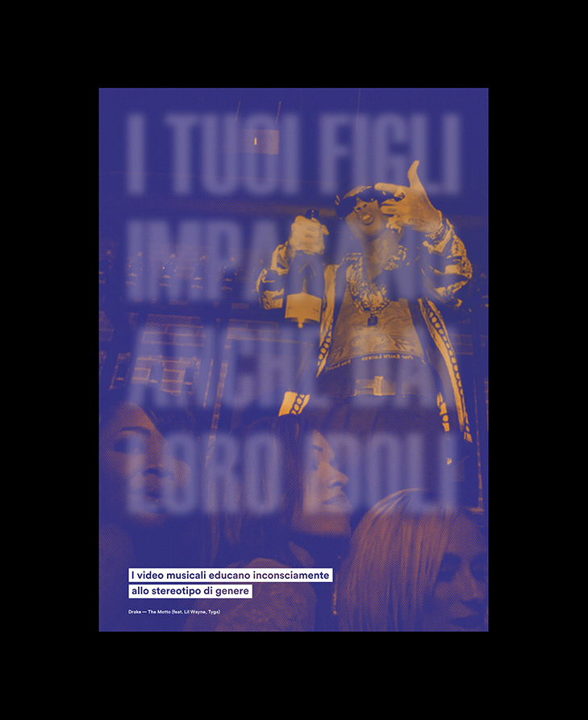

STEREOTIPI.MP4
Year: 2018 / Together with Elena Stefani, Renato Craveiro, Gianluca Rossi, Mariasole Parlato
To date, 79 thousand tons of non-biodegradable plastic waste float in the oceans. Sunlight, wind, waves, and heat break down that material into microplastics, which get mistaken for food by fishes. Studies have shown that, by eating fish, we could ingest up to eleven thousand plastic fragments within a year. With our project we wanted to underline how the theme of marine plastic pollution isn’t something distant, but affects our daily lives. To convey this idea we took inspiration from the linguistic tone of supermarket ads, but kept a more minimal visual approach.

- 